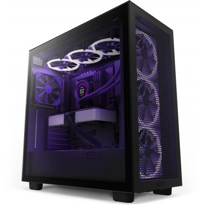
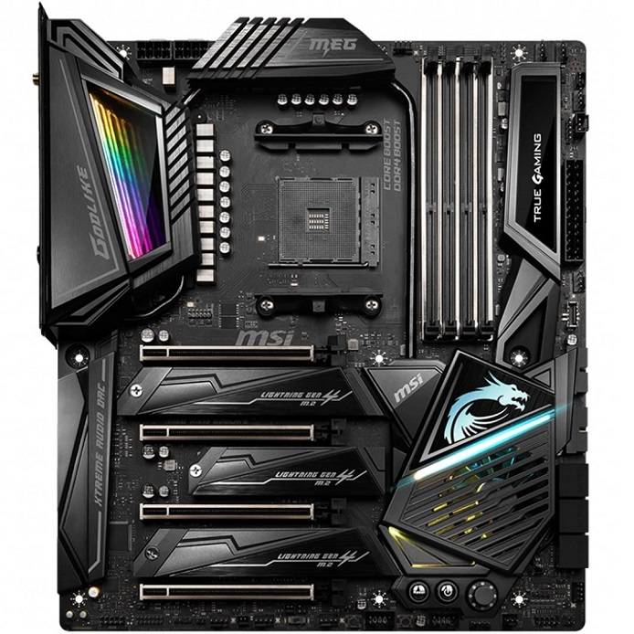
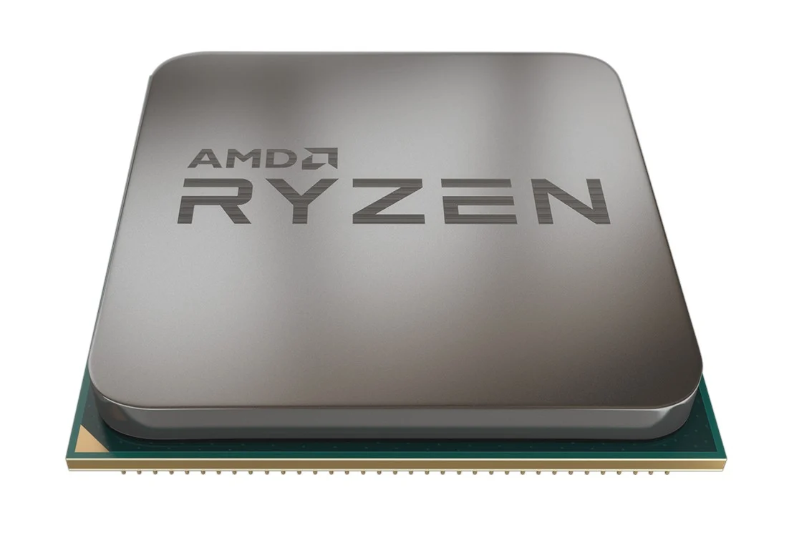
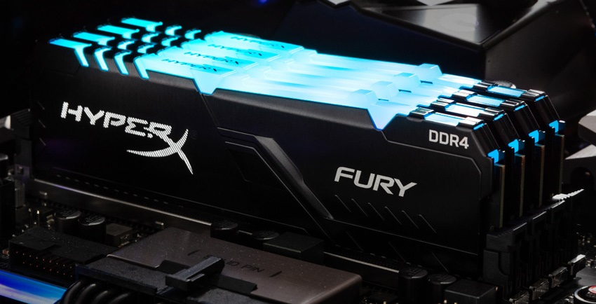
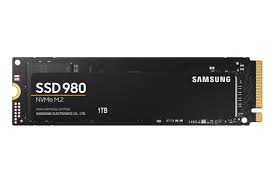
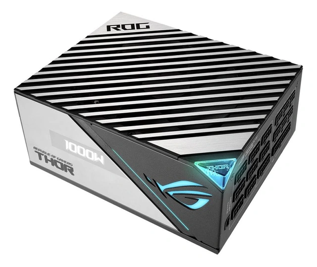
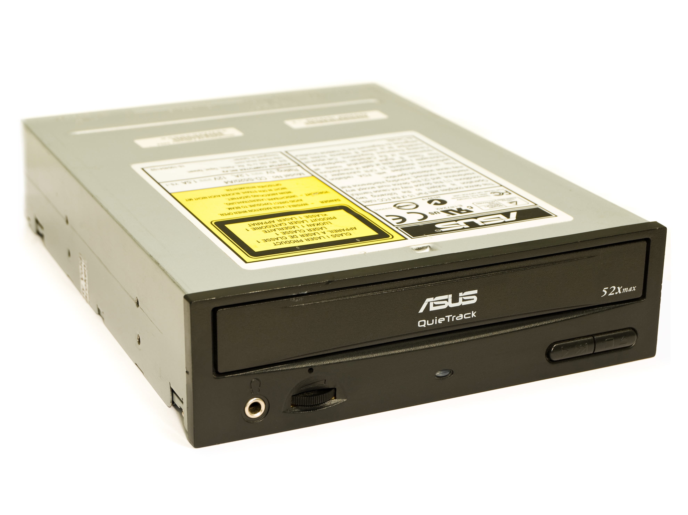
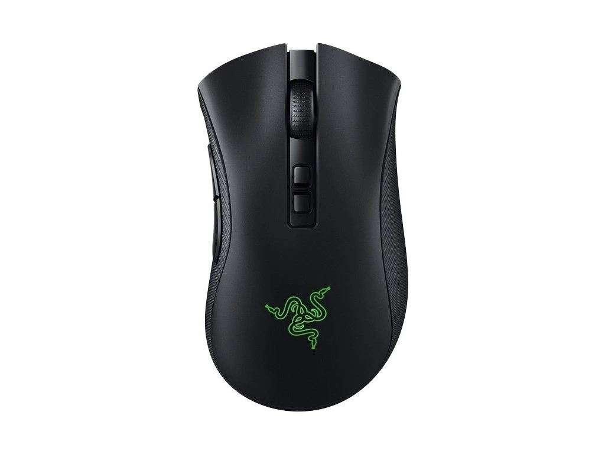

Komponenty
Na této podstránce se dozvíte nejdůležitější informace o počítačových komponentech, o kterých jsem psal ve své dokumentaci.
Počítačová skříň
Slouží jako obal pro komponenty co jsou uvnitř. Chrání je před poškozením. Podílí se také na chlazení komponentů.
Základní deska
Je to základní komponenta počítače, na kterou se připojují všechny ostatní komponenty. Zajišťuje vzájemné fungovaní nejdůležitějších komponentů jako např. procesor, grafická karta nebo třeba paměti RAM.
Procesor
Je to mozek počítače. Zpracovává všechny úkony, které počítač provádí. Čím je procesor výkonnější, tím rychleji počítač pracuje. Při výběru je důležité se dívat hlavně na frekvenci, počet jádra, cache, popřípadě technologie výroby tzn. počet nanometrů.
Paměti RAM
Slouží k dočasnému ukládání dat, se kterými procesor pracuje. Čím více paměti RAM máte, tím více programů můžete mít otevřených najednou. Důležité je se dívat na kapacitu paměti, frekvenci a latence.
Grafická karta
Je to komponenta, která se stará o zobrazení obrazu na monitoru. Čím je grafická karta výkonnější, tím lépe a rychleji zvládá zobrazovat grafické prvky. Nejdůležitější parametry u grafické karty jsou VRAM, frekvence grafického čipu nebo třeba provedení (počet ventilátorů atd.).

Úložiště
Slouží k ukládání dat. Důležité je se dívat na kapacitu úložiště, rychlost čtení a zápisu, technologii (HDD, SSD, NVMe) a také na rozhraní (SATA, M.2).
Napájecí zdroj
Zajišťuje elektrickou energii pro všechny ostatní komponenty. Důležité je se dívat na výkon, efektivitu, kvalitu zpracování a také na dostatečný počet konektorů.
Optické mechaniky, zvukové a síťové karty
Optické mechaniky slouží k čtení a zápisu dat z optických disků. Zvuková karta zajišťuje zvukový výstup z počítače. Síťová karta zajišťuje připojení k internetu.
Periferie
Mezi periferie řadíme např. myš, klávesnici, monitor a další. Samožrejmě je důležité si vybrat kvalitní periferie, ale vybírání je hodně o preferencích.
Leták
Zde si můžete prohlédnout můj leták, který jsem vytvořil pro tento projekt.